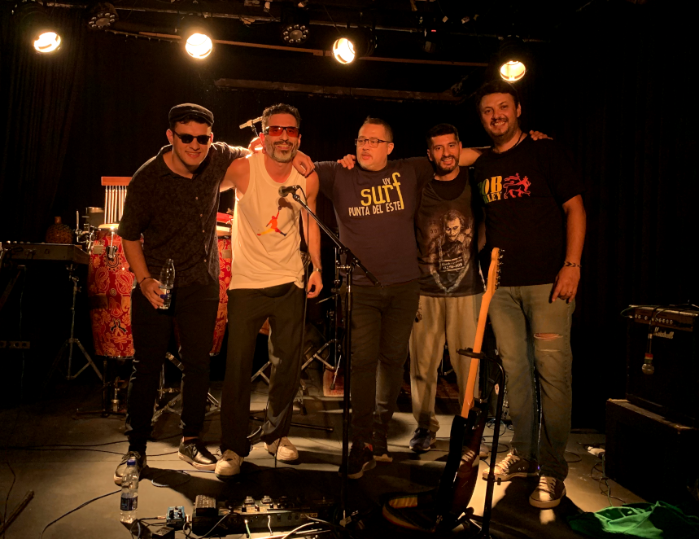

Big Ton
El Sonido del Bañado
Músicos
- Gastón Ramos - Voz, Guitarra y Producciones
- Carlos Sangalli - Bajo y Groove
- Ulises Koch - Batería y Groove
- Vicente Flores - Teclados y Magia
- Federico Fernandez - Percusión y Onda

Social Media
- Instagram: @bigt0n
- Youtube: https://www.youtube.com/@big-ton
- Spotify: https://open.spotify.com/artist/0F73DFt9ilGtFVhjF6h7Fe
- Email: ramos.gaston@gmail.com
- Teléfono de contacto: 342-4341818
¿Cuándo y por qué nace musicalmente Big Ton?
Big Ton nace el 12 de agosto de 2016. Ese año fue especialmente difícil para mí debido a una tendinitis en ambos brazos, lo que me impedía hacer prácticamente cualquier cosa con las manos. Soy programador, así que trabajar se volvió casi imposible. En esa época, también tocaba el bajo en una banda tributo, pero el dolor en mis manos y brazos era insoportable. Debido a esto y a otras crisis existenciales, decidí renunciar a mi trabajo diurno como programador para enfocarme en curar mi tendinitis.
Además de estos problemas físicos, también estaba desilusionado por mis intentos fallidos de formar bandas de reggae que nunca llegaban a tocar en vivo, posiblemente debido a las mismas dificultades que enfrentan muchas bandas para avanzar. Estas bandas no lograban nada sólido ni hacían progresos reales.
Con todo esto en mente, decidí crear Big Ton. Había estado observando a muchos artistas de reggae que usaban el formato "Soundsystem", donde el cantante se presenta con un DJ que pone las pistas. Ver a artistas tan reconocidos como Capleton, Sizzla, Morodo, Zona Ganjah, Alika, Miss Bolivia, Fidel Nadal usando este formato fue un momento de inspiración para mí. Cansado de lidiar con los típicos problemas de las bandas, pensé: "¡Esta es la mía!".
Entonces, decidí grabar un disco completo con canciones propias en mi casa, utilizando un estudio bastante precario que tenía en ese momento. Así nació el primer disco de Big Ton, "Al fin es viernes", cuyo objetivo principal era poder tocar en vivo sobre las pistas grabadas.
Arte y Estilo
Entre camalotes y cardenales, en el centro de la isla de Arroyo Leyes, Santa Fe. El sonido del bañado es referencial y colorido, así como los estilos que fue atravesando esta banda. Actualmente una mezcla de ritmos urbanos que tuvo sus raíces en el reggae, mutando y animándose a traspasar gustos, con un mensaje bastante directo, en consonancia con uno de sus discos "simple y orgánico", que dice algo así como "disfrutá el momento y la estadía", sus letras hacen referencia a un pensamiento crítico y a la vez divertido. Todos temas propios, contenidos en 4 discos más una serie de Singles de su último material "En lo de la Chela".
Recorridio y participaciones
En su recorrido musical, la banda litoraleña, participó de numerosos eventos culturales, en espacios públicos y privados, compartiendo escenarios con artistas reconocidos como la Delio Valdez, Fidel Nadal, Gaspar OM, Dj Nelson, entre otros. Además de contar con producciones musicales en conjunto con El Chávez (Árbol, El puntero) en algunas de sus canciones y videoclips de la mano de la productora santafesina NOT MOMMA.
::: Contrataciones: +549-342-4341818 :::